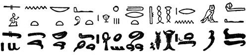

|
|
|
Sponsored Link •
|
Summary
In the last dozen episodes I have defined plenty of macros, but I have not really explained what macros are and how they work. This episode closes the gap: it explains the true meaning of Scheme macros by introducing the concepts of syntax object and of transformer over syntax objects.
|
Advertisement
|
Scheme macros - as standardized in the R6RS document - are built over the concept of syntax object. The concept is peculiar to Scheme and has no counterpart in other languages (including Common Lisp), therefore it is worth to spend some time on it.
A syntax-object is a kind of enhanced s-expression: it contains the source code as a list of symbols and primitive values, but also additional informations, such as the name of the file containing the source code, the position of the syntax object in the file, a set of marks to distinguish identifiers according to their lexical context, and more.
The easiest way to get a syntax object is to use the syntax quoting operation, i.e. the syntax (#') symbol you have seen in all the macros I have defined until now. Consider for instance the following script, which displays the string representation of the syntax object #'1:
$ cat x.ss (import (rnrs)) (display #'1)
If you run it under PLT Scheme you will get
$ plt-r6rs x.ss #<syntax:/home/micheles/Dropbox/gcode/artima/scheme/x.ss:2:11>
In other words, the string representation of the syntax object #'1 contains the full pathname of the script and the line number/column number where the syntax object appears in the source code. Clearly this information is pretty useful for tools like IDEs and debuggers. The internal implementation of syntax objects is not standardized at all, so that you get different informations in different implementations. For instance Ikarus gives
$ ikarus --r6rs-script x.ss #<syntax 1 [char 28 of x.ss]>
i.e. in Ikarus syntax objects do not store line numbers, they just store the character position from the beginning of the file. If you are using the REPL you will have less information, of course, and even more implementation-dependency. Here are a few example of syntax objects obtained from syntax quoting:
> #'x ; convert a name into an identifier #<syntax x> > #''x ; convert a literal symbol #<syntax 'x> > #'1 ; convert a literal number #<syntax 1> > #'"s" ; convert a literal string #<syntax "s"> > #''(1 "a" 'b) ; convert a literal data structure #<syntax '(1 "a" 'b)>
Here I am running all my examples under Ikarus; your Scheme system may have a slightly different output representation for syntax objects.
In general #' can be "applied" to any expression:
> (define syntax-expr #'(display "hello")) > syntax-expr #<syntax (display "hello")>
It is possible to extract the s-expression underlying the syntax object with the syntax->datum primitive:
> (equal? (syntax->datum syntax-expr) '(display "hello")) #t
Different syntax-objects can be equivalent: for instance the improper list of syntax objects (cons #'display (cons #'"hello" #'())) is equivalent to the syntax object #'(display "hello") in the sense that both corresponds to the same datum:
> (equal? (syntax->datum (cons #'display (cons #'"hello" #'())))
(syntax->datum #'(display "hello")))
#t
The (syntax ) macro is analogous to the (quote ) macro. Mreover, there is a quasisyntax macro denoted with #` which is analogous to the quasiquote macro (`). In analogy to the operations comma (,) and comma-splice (,@) on regular lists, there are two operations unsyntax #, (sharp comma) e unsyntax-splicing #,@ (sharp comma splice) on lists and improper lists of syntax objects.
Here is an example using sharp-comma:
> (let ((user "michele")) #`(display #,user)) (#<syntax display> "michele" . #<syntax ()>)
Here is an example using sharp-comma-splice:
> (define users (list #'"michele" #'"mario")) > #`(display (list #,@users)) (#<syntax display> (#<syntax list> #<syntax "michele"> #<syntax "mario">) . #<syntax ()>)
Notice that the output - in Ikarus - is an improper list. This is somewhat consistent with the behavior of usual quoting: for usual quoting '(a b c) is a shortcut for (cons* 'a 'b 'c '()), which is a proper list, and for syntax-quoting #'(a b c) is equivalent to (cons* #'a #'b #'c #'()), which is an improper list. The cons* operator here is a R6RS shortcut for nested conses: (cons* w x y z) is the same as (cons w (cons x (cons y z))).
However, the result of a quasi quote interpolation is very much implementation-dependent: Ikarus returns an improper list, but other implementations returns different results; for instance Ypsilon returns a proper list of syntax objects whereas PLT Scheme returns an atomic syntax object. The lesson here is that you cannot rely on properties of the inner representation of syntax objects: what matters is the code they correspond to, i.e. the result of syntax->datum.
It is possible to promote a datum to a syntax object with the datum->syntax procedure, but in order to do so you need to provide a lexical context, which can be specified by using an identifier:
> (datum->syntax #'dummy-context '(display "hello")) #<syntax (display "hello")
(the meaning of the lexical context in datum->syntax is tricky and I will go back to that in a future episode).
syntax-match is a general utility to perform pattern matching on syntax objects; it takes a syntax object in output and returns a syntax object in output. Here is an example of a simple transformer based on syntax-match:
> (define transformer
(syntax-match ()
(sub (name . args) #'name))); return the name as a syntax object
> (transformer #'(a 1 2 3))
#<syntax a>
For convenience, syntax-match also accepts a second syntax (syntax-match x (lit ...) clause ...) to match syntax expressions directly. This is more convenient than writing ((syntax-match (lit ...) clause ...) x). Here is a simple example:
> (syntax-match #'(a 1 2 3) () (sub (name . args) #'args)); return the args as a syntax object #<syntax (1 2 3)>
Here is an example using quasisyntax and unsyntax-splicing:
> (syntax-match #'(a 1 2 3) ()
(sub (name . args) #`(name #,@#'args)))
(#<syntax a> #<syntax 1> #<syntax 2> #<syntax 3>)

As you see, it easy to write hieroglyphs if you use quasisyntax and unsyntax-splicing. You can avoid that by means of the with-syntax form:
> (syntax-match #'(a 1 2 3) ()
(sub (name . args) (with-syntax (((a ...) #'args)) #'(name a ...))))
(#<syntax a> #<syntax 1> #<syntax 2> #<syntax 3>)
The pattern variables introduced by with-syntax are automatically expanded inside the syntax template, without need to resort to the quasisyntax notation (i.e. there is no need for #` #, #,@).
Macros are in one-to-one correspondence with syntax transformers, i.e. every macro is associated to a transformer which converts a syntax object (the macro and its arguments) into another syntax object (the expansion of the macro). Scheme itself takes care of converting the input code into a syntax object (if you wish, internally there is a datum->syntax conversion) and the output syntax object into code (an internal syntax->datum conversion).
Consider for instance a macro to apply a function to a (single) argument:
(def-syntax (apply1 f a) #'(f a))
This macro can be equivalently written as
(def-syntax apply1 (syntax-match () (sub (apply1 f a) (list #'f #'a))))
The sharp-quoted syntax is more readable, but it hides the underlying list representation which in some cases is pretty useful. This second form of the macro is more explicit, but still it relies on syntax-match. It is possible to provide the same functionality without using syntax-match as follows:
(def-syntax apply1
(lambda (x)
(let+ ((macro-name func arg) (syntax->datum x))
(datum->syntax #'apply1 (list func arg)))))
Here the macro transformer is explicitly written as a lambda function, and the pattern matching is performed by hand by converting the input syntax object into a list and by using the list destructuring form let+ introduced in episode 15. At the end, the resulting list is converted back to a syntax object in the context of apply1. Here is an example of usage:
> (apply1 display "hey") hey
sweet-macros provide a convenient feature: it is possible to extract the associated transformer for each macro defined via def-syntax. For instance, here is the transformer associated to the apply1 macro:
> (define tr (apply1 <transformer>)) > (tr #'(apply1 display "hey")) #<syntax (display "hey")>
The ability to extract the underlying transformer is useful in certain situations, in particular when debugging. It can also be exploited to define extensible macros, and I will come back to this point in the future.
The previous paragraphs were a little abstract and probably of unclear utility (but what would you expect from an advanced macro tutorial? ;). Now let me be more concrete. My goal is to provide a nicer syntax for association lists (an association list is just a non-empty list of non-empty lists) by means of an alist macro expanding into an association list. The macro accepts a variable number of arguments; every argument is of the form (name value) or it is a single identifier: in this case latter case it must be magically converted into the form (name value) where value is the value of the identifier, assuming it is bound in the current scope, otherwise a run time error is raised "unbound identifier". If you try to pass an argument which is not of the expected form, a compile time syntax error must be raised. In concrete, the macro works as follows:
(test "simple"
(let ((a 0))
(alist a (b 1) (c (* 2 b))))
'((a 0) (b 1) (c 2)))
(test "with-error"
(catch-error (alist a))
"unbound variable")
Here is the implementation:
(def-syntax (alist arg ...)
(with-syntax ((
((name value) ...)
(map (syntax-match ()
(sub n #'(n n) (identifier? #'n))
(sub (n v) #'(n v) (identifier? #'n)))
#'(arg ...)) ))
#'(let* ((name value) ...)
(list (list 'name name) ...))))
The expression #'(arg ...) expands into a list of syntax objects which are then transformed by the syntax-match transformer, which converts identifiers of the form n into couples of the form (n n), whereas it leaves couples (n v) unchanged, just checking that n is an identifier. This is a typical use case for syntax-match as a list matcher inside a bigger macro. We will see other use cases in the next Adventures.
Have an opinion? Readers have already posted 2 comments about this weblog entry. Why not add yours?
If you'd like to be notified whenever Michele Simionato adds a new entry to his weblog, subscribe to his RSS feed.
 | Michele Simionato started his career as a Theoretical Physicist, working in Italy, France and the U.S. He turned to programming in 2003; since then he has been working professionally as a Python developer and now he lives in Milan, Italy. Michele is well known in the Python community for his posts in the newsgroup(s), his articles and his Open Source libraries and recipes. His interests include object oriented programming, functional programming, and in general programming metodologies that enable us to manage the complexity of modern software developement. |
|
Sponsored Links
|